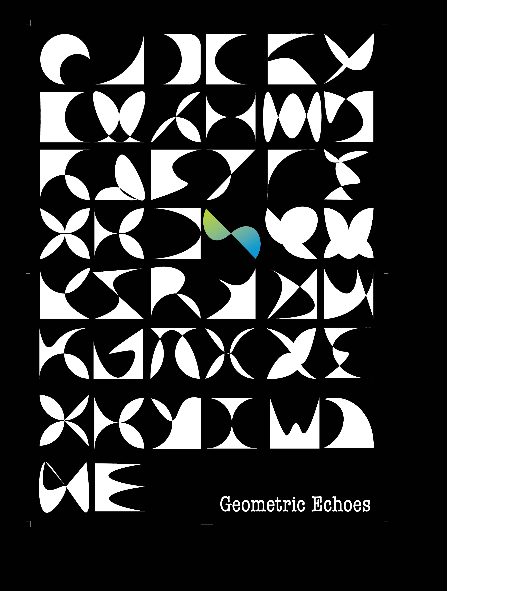

AWARD / 2025
受賞歴
作品を通じて評価いただいた記録です。
- 年
- 2025
- 賞
- 入選
- 作品
- Geometri Echoes
受賞作品について
幾何学的な形や重なりをテーマに制作した作品です。形の組み合わせと画面の構成を考えました。
2025 / 筑後
Geometri Echoes
入選
幾何学や形状デザインをテーマにした作品。

AWARD / 2025
作品を通じて評価いただいた記録です。
幾何学的な形や重なりをテーマに制作した作品です。形の組み合わせと画面の構成を考えました。
2025 / 筑後
入選
幾何学や形状デザインをテーマにした作品。
